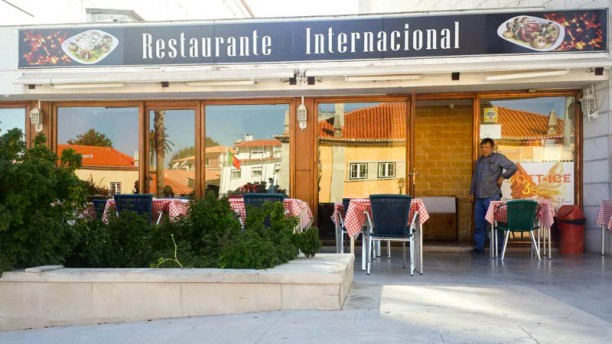
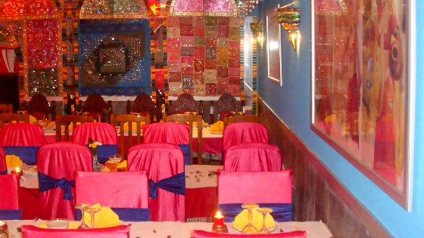
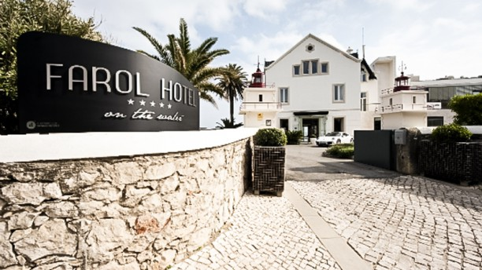
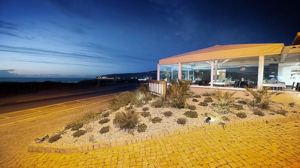
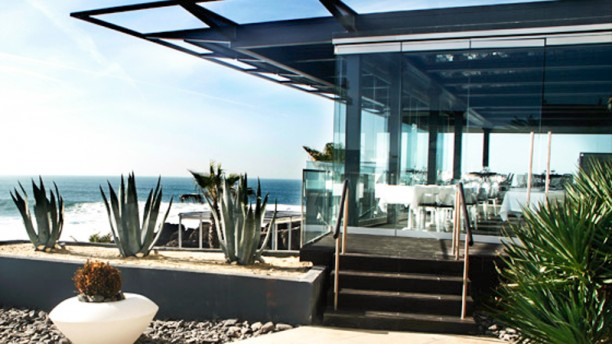

Gourmet - Hotel Cascais MiragemIntegrado num moderno hotel, a funcionar desde 2005, baseia a sua oferta numa requintada cozinha a cargo do chefe Pedro Marques, com influências da gastronomia portuguesa e oriental. |
 Internacional CascaisO Restaurante Internacional foi inaugurado em 2004 com o intuito de proporcionar autênticos sabores, especiarias e experiências do Oriente aos seus clientes. Localizado no centro de Cascais, conta com um espaço acolhedor com decoração simples tipicamente indiana, onde poderá saborear os melhores pratos da cultura Indiana, provar as deliciosas pizzas da casa ou simplesmente um bom peixe grelhado, entre outros pratos tipicamente portugueses. |
 Mayura Tandoori - Restaurante IndianoO restaurante Indiano mais antigo de Cascais, situado no centro da vila de Cascais, com uma decoração indiana calorosa e aconchegante, propõe uma incursão saborosa e competente pelos sabores indianos. Há 19 anos que este é o lugar ideal para se ser presenteado com uma refeição num ambiente altamente relaxante acompanhado da apetitosa e rica culinária indiana e goesa. |
 The MixA mestria da cozinha de autor do Chef Executivo Hugo Silva traduz-se numa palavra: encantamento. Aprecie o trabalho da sua equipa enquanto são criados verdadeiros prazeres gastronómicos. Deguste os sabores dos nossos pratos onde se encontra o perfeito equilíbrio dos paladares mediterrânicos. E, a partir do terraço, deixe os seus olhos vaguear pelo glorioso Atlântico sempre em constante mudança. |
 Panorama - GuinchoA qualidade é a de sempre, a que habituámos os nossos clientes ao longo dos anos: Serviço, qualidade das matérias-primas e excelência na sua confeção.
Com o espaço renovado, a nossa decoração contemporânea, o oceano e a serra de Sintra como pano de fundo, a nossa esplanada interior e um serviço discreto e acolhedor, estão reunidas as condições ideais para uma excelente refeição. |
 Sushi DesignPaixão aliada aos ingredientes mais frescos nas mãos do Sushi Master Nuande Pekel, transformam a sua experiência de sushi numa memória inigualável. Sushi e sashimi suculentos apresentados na melhor tradição japonesa. Tudo isto num local relaxante e inspirador, com o Atlântico a seus pés. Continue a experiência com um delicioso menu de takeaway. |